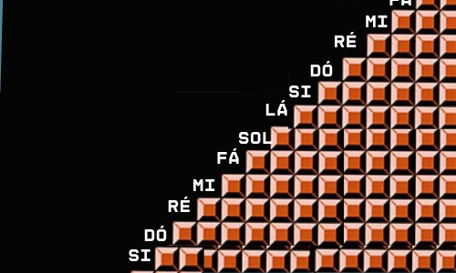
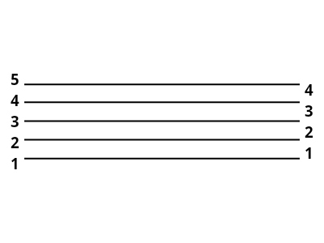
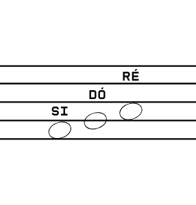
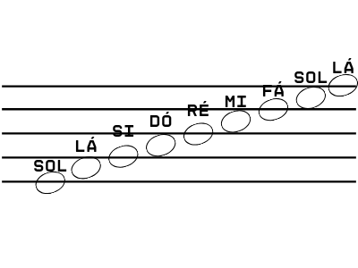
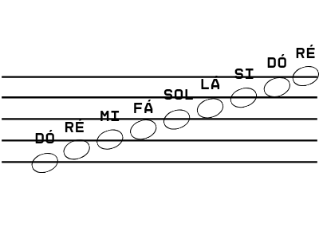

Aula 01: Nome das notas e Pauta
Versão em pdf com exercícios.
Os sons são infinitos, você pode subir e descer infinitamente e, mesmo que você não consiga ouvir, os sons estão lá. É por isso que o nome das notas se comporta do mesmo jeito, então a sequência Dó Ré Mi Fá Sol Lá Si vai se repetir infinitamente, surgindo outro Dó depois de cada Si, e sempre existindo outro Si antes de cada Dó
Nessa sequência, quanto mais subimos mais agudos(finos) os sons ficam, e quanto mais descemos, mais graves(grossos) eles se tornam. É assim que a pauta(ou pentagrama) vai funcionar.
Esse conjunto de cinco linhas e quatro espaços segue a mesma ordem do nome das notas, então, se eu tenho um Dó na segunda linha, no espaço acima é um Ré, e qual nota escrita no espaço abaixo é um Si.
Tendo uma nota de referência nós podemos descobrir todas as outras:
Se eu tiver um sol na primeira linha:
Se tiver um mi na segunda
Para firmar o que aprendeu, resolva os exercícios do material em PDF. Bons estudos!